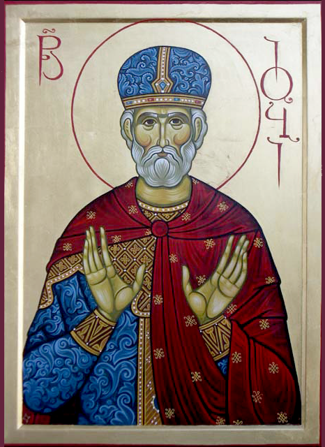

Избранному Господем великому Ветхаго Завета праведнику, пятому от Авраама Исавовых сынов сынови, Иову Многострадальному похвальное воспоем пение: яко своими дивными добродетельми и всем своим житием учителем всей вселенней явившемуся. Ты же, праведный Иове, приими сию похвалу, с любовию тебе приносимую, согрей наша сердца желанием подражати твоим подвигом, да единодушно зовем ти:
Радуйся, Иове Многострадальный, всему миру учителю предивный.
Ангели Божии в день некий предсташа Господеви, хвалу Ему возносяще. С ними же и диавол прииде. Сей последний, вопрошенный Господем об Иове, начат клеветати на праведника, яко той чтит Господа земных ради благ, имиже Бог его награди. Мы же, злую диавольскую клевету на великаго праведника с горечию воспоминающе, тако Иова восхваляем:
Радуйся, Иове, яко сам Господь наименова тя человека непорочна и благочестива.
Радуйся, от Господа вся блага земная приемый.
Радуйся, множество слуг имевый и стада своя тысящами исчитывавый.
Радуйся, Господем дарованных тебе сынов и дщерей в великом благочестии воспитавый.
Радуйся, яко о чадех своих великое попечение являл еси.
Радуйся, яко ни к чему же от земных благ сердцем не прилеплялся еси.
Радуйся, яко мудростию своею над всеми высоко стоял еси.
Радуйся, яко царь посреде храбрых был еси.
Радуйся, яко был еси благороднейший сущих от восток солнца.
Радуйся, всеславне, Божий угодниче истинный.
Радуйся, великая дела благая совершивый.
Радуйся, в терпении своем мир просветивый.
Радуйся, Иове Многострадальный, всему миру учителю предивный.
Ведая веру несокрушимую и велию преданность воли Божии раба своего, даде Господь власть диаволу вся блага земная у Иова отъяти и чад его погубити. Мы же, сему особому изволению Божию дивящеся, вопием Премудрому Богу: Аллилуиа!
Разумом своим злым зело обрадовася диавол, таковое изволение Божие получивый. Во един день, егда вся чада Иовля единодушно в доме старейшаго брата своего трапезою наслаждахуся, посла диавол исполнители злые воли своея, и все имущество Иовле погуби, и десятерицу чад его смерти предаде. Буря нечаянных искушений не поколеба сего дивнаго столпа, и из уст его изыдоша сицевая мудрая словеса: Наг изыдох аз от чрева матере моея, наг и отъиду тамо: Господь даде, Господь отъят: яко Господеви изволися, тако бысть. Буди Имя Господне благословено во веки! Чтуще таковую преданность воли Божии праведника, мы в похвалу Иова сице глаголем:
Радуйся, Иове, ничимже пред Господем согрешивый.
Радуйся, Многострадальне, и устнама своима безумия Богу не давый.
Радуйся, яко двери дома твоего выну отверсты бяху всякому мимошедшему.
Радуйся, яко странник вне дома твоего не оставашеся.
Радуйся, яко ты вдовича слезнаго ока не презрел еси.
Радуйся, око слепым, нога же хромых был еси.
Радуйся, яко хлеб свой николиже един вкушал, сирым же обильно давал еси.
Радуйся, яко вси немощнии, чесого требующии, вся от тебе радостно получали суть.
Радуйся, яко о всяком немощнем ты плакал еси.
Радуйся, яко видя мужа в скорбех, тяжко вздыхал еси.
Радуйся, во всякой нужде и печали скорый помощниче.
Радуйся, ищущым предстательства твоего неусыпный заступниче.
Радуйся, Иове Многострадальный, всему миру учителю предивный.
На силу свою полагаяся, сатана паки клевещет на Иова и Богу глаголет: Посли руку Твою и коснися костем его и плоти его, аще не в лице Тя благословит? И паки Господь предает дивнаго Иова в руце беззаконника. Сеятель же зла, вышед от лица Господня, злорадно порази Иова гноем лютым от ногу даже до главы его. И седяше праведник вне града на гноищи, взем чрепок, да острогает гной свой. Мы же, благословяще Бога, допустивша навести проказу лютую на Иова непорочнаго, прославления ради раба Своего, вопием Господу: Аллилуиа!
Воистинну терпение паче человеческаго имяше Многострадальный Иов. Болезнь в прокаженнем телеси умножашеся. Жена же праведника, зрящи страдания мужа своего и сатаною научаема, даде совет Иову: Рцы глагол некий ко Господу и умри. Он же, воззрев, рече к ней: Вскую яко едина от безумных жен возглаголала еси? Аще благая прияхом руки Господни, злых ли не стерпим? Во всех сих приключившихся ему, ничимже согреши Иов устнама пред Богом и не даде безумия Богу. Откуду кто возможет обрести глаголы, прославляющыя праведника новолепне? Обаче мы, любовию к Иову побеждаеми, Иовлими же словесы прославляем Многострадальнаго сице:
Радуйся, яко кости твоя нощию смятошася и жилы твоя в разслабление приидоша.
Радуйся, яко кожа твоя вельми помрачися.
Радуйся, яко и составы телесе твоего от гноя сгореша.
Радуйся, яко исполнен был еси болезнию от вечера до утра.
Радуйся, яко тело твое в гнои червей пребываше.
Радуйся, яко брашна твоя смрадом преисполнена быша.
Радуйся, яко гнушахуся тебе и воставаху на тя видевший тя.
Радуйся, Иове, всеми прилоги лукаваго непреклоненный.
Радуйся, и до смерти Господу преданный.
Радуйся, безумная словеса жены своея обличивый.
Радуйся, столпе добльственный, в тяжких болезнех своих никакоже унынию предавыйся.
Радуйся, в скорбех своих Бога благословивый.
Радуйся, Иове Многострадальный, всему миру учителю предивный.
Множество великих смущений найде на праведника, егда приидоша к нему три друзи его. Сии издалеча на прокаженнаго воззревше, не познаша его, и возопивше гласом велиим, восплакашася, разтерзавше ризы своя и посыпавше перстию главы своя: седяху при нем седмь дний и седмь нощей, и никтоже от них возгагола к нему словесе утешения. Зря таковыя други своя, всем сердцем устремися невинный страдалец к Богу, на Него Единого уповая и взывая Ему: Аллилуиа!
Слыша глас велий и вопль другов своих, уразумел еси, Многострадальне, яко тии не дадут тебе утешения. В горести же душевней, пред лицем Господа, отверзл еси уста своя, Иове, начен глаголати, яко лучше тебе не родитися, нежели жити кроме близости к Богу. Сострадающе праведнику в неизреченном его горе, в похвалу великия его преданности Господу, глаголем Иову сицевая:
Радуйся, велий Ветхозаветный праведниче, все блаженство свое в близости к Богу полагавый.
Радуйся, страх от Бога отверженну тебе быти в низпосланных искушениих испытавый.
Радуйся, смерть предпочитавый, нежели жити тебе оставленну от Бога.
Радуйся, чаянием утешения Божия скорби своя твердо претерпевый.
Радуйся, яко о безконечной загробной жизни вещал еси.
Радуйся, яко в смерти вечный покой полагал еси.
Радуйся, скорби земныя яко предуготовление к жизни будущей разумевый.
Радуйся, вечныя радости прозорливый провидче.
Радуйся, о безсмертнем блаженстве ко Господу взывавый.
Радуйся, в земных благах токмо с Господем благо видевый.
Радуйся, яко красоты зримаго неба без Бога за ничтоже почитал еси.
Радуйся, яко новаго неба и новыя земли всею душею ожидал еси.
Радуйся, Иове Многострадальный, всему миру учителю предивный.
Всецелыя Господу преданности праведника три друзи его в словесех Иовлих не разумеваху, токмо же ропот его на Бога видяху: сего ради внушаху Иову к Богу обратитися с молитвою и покаянием о гресех своих. Невинный же страдалец о единем моляше Бога, да даст ему Господь силу невинных страданий своих уразумети. К Богу, источнику премудрости и разума, от сердца своего сокрушеннаго праведник вопияше: Аллилуиа!
Хотя указати на неисповедимыя пути Господни, об уразумении киих и должно есть человеку Бога умоляти, ты други своя, Иове, жити в воли Божии наставлял еси. Мы же, мудрыя речи страждущаго праведника чтуще, приносим ему сия похвалы:
Радуйся, яко неправды на Бога уста твоя не изрекоша.
Радуйся, ложь другов своих мудро обличивый.
Радуйся, о непостижимости промысла Божия смиренномудро вещавый.
Радуйся, жизнь праведников в Ветсем Завете уяснити возжелавый.
Радуйся, погруженна себе от природы во всякую скверну видевый.
Радуйся, нужду в ходатаи между Богом и людьми своим благочестивым сердцем прозревавый.
Радуйся, любве Отчи от Бога возжадавый.
Радуйся, яко слезно умолял еси Господа, да не удалит Он от тебе страх Свой.
Радуйся, яко искушения своя от Бога посланная почитал еси.
Радуйся, яко грядущую смерть избавительницу себе от земных скорбей полагал еси.
Радуйся, мудрый изъяснителю путей Божественных.
Радуйся, благий руководителю к Царствию Небесному.
Радуйся, Иове Многострадальный, всему миру учителю предивный.
Проповедник непостижимости глубин Божиих, Божия премудрости и разума явился еси, Многострадальне, егда обличал еси своя лицемерствующыя други, мнящыя себе пути премудрости Божия разумеющя. Смиренно видя себе немощна промысл Божий ведети, возжелаше праведник на суд пред Богом стати и у Того особыя милости просити, дабы Господь грозную руку Свою отъял и страхом Своим его не ужасал. Нося в сердце своем смиренную мольбу ко Господу, со умилением Иов к Единому Судии и Богу взываше: Аллилуиа!
Возсия в души твоей, праведне, благодатный луч Божественный, егда в велицей горести своей приближение к смерти ожидал еси, и к невозвратному шествию в неведомую страну мрака и тьмы вечныя готовился еси. Всею бо душею любя Господа, по призыву Божию в загробный мир ити готов был еси, Иове, обаче надежды жизни новыя в близости к Богу в сердце своем не отривал еси. Радующеся таковому светлому чаянию страждущаго праведника, с любовию поем ему:
Радуйся, смиренный, Богомудрый, невинный страдальче.
Радуйся, о близости смертней непрестанно помышлявый.
Радуйся, день и час кончины человека в премудрой воли Божии полагавый.
Радуйся, рабе Христов нелицемерный.
Радуйся, яко чистым сердцем своим Бога узрети возжелал еси.
Радуйся, яко в своей глубокой Господу преданности дерзновенно Того вопрошал еси.
Радуйся, яко от правды своея никакоже отступил еси.
Радуйся, яко у Бога истинныя премудрости искал еси.
Радуйся, други своя врачы неправедныя именовавый.
Радуйся, в словесех их лесть пред Богом видевый.
Радуйся, душу свою чисту и непорочну сохранивый.
Радуйся, безбоязненно пред Господем на суде стояти восхотевый.
Радуйся, Иове Многострадальный, всему миру учителю предивный.
Хотящым истинную мудрость в словесех твоих уразумети, помози нам, угодниче Божий. Ложныя други своя обличая, указал еси им, Иове, яко блага земная и горести людския суть в руках Божиих. Господь раздает их премудро: отнюдуже и праведный люте страждает и нечестивый благоденствует. Тайны мироправления Божия человек перстный ведети не может, за вся же должен есть благодарити Господа и, восхваляя Его, пети Ему: Аллилуиа!
Дивныя речи слышим мы из уст Ветхозаветнаго праведника. Лицемерствующии же друзи его утешения Иову не даваху, наипаче же новыя скорби сердцу его причиняху. Праведник же токмо ко Господу мысль свою устремляше, на Единаго Заступника и Нелицепрятнаго Судию Бога уповаше, от Него Единаго утешения чая. Видяще таковое превыспренное устремление Многострадальнаго, величаем его сице:
Радуйся, лицемерия мудрый обличителю.
Радуйся, други своя злыя утешители именовавый.
Радуйся, видевый други, покивающих главами над великими страданьми друга своего.
Радуйся, токмо от Господа сердцу своему облегчения искавый.
Радуйся, токмо на небесех Истиннаго Заступника себе видевый.
Радуйся, яко ужасы пред Богом преисполняшеся сердце твое.
Радуйся, яко чистою молитвою своею к Богу приближался еси.
Радуйся, яко на правду свою крепко уповал еси.
Радуйся, в смирении своем, беседовати с Богом недостойна себе почитавый.
Радуйся, токмо умоляти Бога Судию своего желавый.
Радуйся, невиновность свою пред всем миром свидетельствуяй.
Радуйся, яко око твое благодатными слезами преисполнено бе.
Радуйся, Иове Многострадальный, всему миру учителю предивный.
Странно есть нам, сыном Завета Новаго, кровию Сына Божия искупленным и Евангелие Христово имущым, дерзновенная словеса Ветхозаветнаго праведника слышати. Великия тайны загробнаго мира Многострадальному не ведомы бяху, своим же преданным Богу сердцем Иов моляшеся, да озарит его Сущий на небеси Свидетель и заступник таковых таин ведением. Ко Господу слезит око Многострадальнаго и с умилением поет праведник Богу: Аллилуиа!
Чая приближения кончины своея, терпя на земли страдания тяжкая, в благодатных озарениих своих глаголаше праведник, яко аще в скорбех на земли несть облегчения, да скрыет его Господь в преисподних до времени. Егда же престанет гнев Божий, греси и беззакония людская покрыются, тогда Господь по милости своей даст праведнику близким к Нему быти. Мы же, таковое светлое упование страждущаго зряще, в особую ему похвалу глаголем сице:
Радуйся, прозорливче Богомудрый и просвещенный.
Радуйся, святый и великий страдальче.
Радуйся, плотию постарадавый и греха свободивыйся.
Радуйся, любовию ко Господу дух уныния препобедивый.
Радуйся, яко светлыя надежды жизни будущия преисполнен был еси.
Радуйся, яко всею душею в любовь безконечную Божию веровал еси.
Радуйся, тайны загробнаго мира уведети возжадавый.
Радуйся, в мрачных удолиих адовых милости Божия ожидавый.
Радуйся, упование на светлую жизнь за гробом Давиду, Исаии, Иезекиилю и иным пророком равный.
Радуйся, яко сим упованием стал еси на единый путь с великими Ветхозаветными праведники.
Радуйся, всем праведником радость светлаго бытия за гробом проповедавый.
Радуйся, Евангельских Христовых истин прозорливый исповедниче.
Радуйся, Иове Многострадальный, всему миру учителю предивный.
Всякими великими искушеньми и скорбьми духовно возрастал еси, Иове. Господь же особыми откровении услаждаше душу твою, Многострадальне. Благодатно озаренный Богом, ты, избранниче Божий, вещал еси: Вем, яко жив Искупитель мой, Иже в день последний распадающуюся кожу мою сию из праха воскресит, аз же во плоти моей узрю Бога. Воспринимающе сердцами нашими сию веру в воскрешение плотию, мы, таковыми откровении праведника вразумляеми, вопием Богу: Аллилуиа!
Ветия воистинну неправедныя явишася многоречивии друзи твои, Иове. Ложнии сии утешителие возжелаша тя, страждущаго друга своего, укоряти, глаголюще, яко ты алчущих не питал еси, нищих не одевал еси, вдовиц и сирых обижал еси, и жажду ближних не утолял еси. О, великое долготерпение великого страдальца! Восхваляюще таковое долготерпение и чистое добродетельное Иовле житие, воспеваем ему сицевая:
Радуйся, яко поношения от другов своих смиренно претерпевал еси.
Радуйся, яко и посмеяния малых детей благодушно приимал еси.
Радуйся, яко и раби твои любовь твою к ним забыша.
Радуйся, яко и жена твоя лукавому совету неразумно внимаше.
Радуйся, яко злый сатана, разтерзав столп телесе, сокровища духа твоего не украде.
Радуйся, велий борче, вся козни вражыя препобедивый.
Радуйся, яко Единаго Бога и Господа на земли зрети хотел еси.
Радуйся, яко своею преданностию Господу прославился еси.
Радуйся, высотою подвигов своих всех удививый.
Радуйся, просвещения духовнаго указателю.
Радуйся, всех людей великое утешение.
Радуйся, яко многим в мире сем тобою спасение явися.
Радуйся, Иове Многострадальный, всему миру учителю предивный.
Спасения себе токмо от Господа чая, и светлую надежду на обновленную жизнь за гробом имея, Многострадальный Иов, иже праведник Ветхаго Завета быв, утвердитися в озарениих своих не дерзаше, в мыслех же и чувствиих своих сумняшеся и горесть некую в души претерпеваше. Мы же, праведнику в сей горести сострадающе и Святей воли Божии преклоняющеся, возопиим Любвеобильному и Премудрому Богу: Аллилуиа!
Стена крепкая в преданности Господу всему миру явился еси, Многострадальне, егда твердо о непорочности своей и лицемерии другов своих вещал еси. Имуще сердца, исполненная состраданием к невинно страждущему праведнику, едиными усты нашими со умиленнем зовем ему тако:
Радуйся, великий праведниче, в страшных искушениих всецело преданность Господу сохранивый.
Радуйся, ни от когоже от людей добраго утешения видевый.
Радуйся, о лишении чад и пропавшем богатстве унынию никакоже предавыйся.
Радуйся, яко всех нас побеждати искушения сребролюбия наставляеши.
Радуйся, яко изменения в небесных светилех мудро разумел еси.
Радуйся, яко ни единыя же приснопребывающия радости к мире сем видел еси.
Радуйся, токмо во Единем Бозе радость и истину выну созерцавый.
Радуйся, великая истинная откровения от Бога прияти сподобивыйся.
Радуйся, яко ложь другов и укорения ближних крепостию духа своего превозмогал еси.
Радуйся, яко всякая безсловесная похотения чистотою сердца своего препобеждал еси.
Радуйся, во всех своих светлых упованиих никакоже посрамивыйся.
Радуйся, яко в тайны загробнаго мира углублялся еси веянием Духа Святаго.
Радуйся, Иове Многострадальный, всему миру учителю предивный.
Пение всеумиленное воспоем Многострадальному, невиновность свою видевшему и неискупленную греховность людскую ведавшему. Зря на себе десницу Божественныя воли, в промысл Божий о человеце вероваше праведный, добраго чая конца. Разделяюще несокрушимую светлую веру его и упование на Бога, могущаго тяжкую Иовлю скорбь облегчити, мы купно с ним вопием Всеблагому Господу: Аллилуиа!
Светла озарения Многострадальнаго, светла и упования его. Времени же минувшу умолча Иов словесы. Умолчаша же и три друзи его ктому пререковати Иову, бе бо Иов праведен пред ними. Глаголет к нему новый собеседник Елиус, егоже речи благожелательней внемлет праведный. Не могущу же Иову уразумети вся словеса сия новая, се Господь Сам явися рабу Своему и глаголаше к Иову сквозе бурю и бурныя облаки, обличая, и наставляя, и исцеляя его. Той же с трепетом благоговейным, внемля словесем Божиим, безмолвне множицею себе укоряше, наипаче же познаваше, яко ничтоже есть пред лицем Божиим: и абие исполнися душа праведнича смирения благодатнаго. Видяще таковое глубокое пред Господем смирение, радостно поем Иову сицевая:
Радуйся, великий в чистоте речей своих пред Господем.
Радуйся, великий в безмернем пред Господем смирении.
Радуйся, ничтожество свое познавый, на уста же своя руку положивый.
Радуйся, подобно Аврааму, земля и пепел себе именовавый.
Радуйся, велемудре, судьбы человека в мире до Христа на себе испытавый.
Радуйся, верный слуго Господень, о своей мудрости глаголати не дерзавый.
Радуйся, ни единым же словесем о речех другов своих обмолвивыйся.
Радуйся, яко благоговейно выслушал еси Господа о дивных делех всемогущества Божия.
Радуйся, в недомыслии пред Богом сокрушенно себе обличивый.
Радуйся, пред премудростию Единаго Бога всею душею преклонивыйся.
Радуйся, в смирении своем, обличавшему тя Господу радостно внимавый.
Радуйся, всех смелых речей своих пред Господем отрекийся и в прахе и пепле раскаявыйся.
Радуйся, Иове Многострадальный, всему миру учителю предивный.
Благодатная велия радость в сердце твое, Многострадальне, сниде. Ты в бури и облаце Господа своего видел еси. Ты обличающее тебе слово Господа, и гневное слово Его к неверным другом твоим слышал еси. Проказа страшная сойде с тебе, Иове, и ты всякая блага земная в сугубом числе от Господа приял еси. В награду за скорби своя долголетие, по милости Божии, стяжал еси, и новую десятерицу чад своих радостно созерцал еси. Воскресение со всеми избранными своими Господь тебе обетова. Презирая вся скорби своя, праведник и мы купно с ним всем сердцем радостно вопием Господу: Аллилуиа!
Безмерныя скорби претерпев и всецелую преданность всесвятей воли Божии показав, живый прообраз скорбей Господа, крестными страдании диавола победившаго, явился еси, Иове. Поюще твое чудное житие, восхваляюще безмерное долготерпение твое, Многострадальне, словесы Самого Господа, Его пророков и апостолов, и церковными словесы восхваляем тебе сице:
Радуйся, праведниче, усты Божиими на всю вселенную хвалимый.
Радуйся, истину в словесех о Бозе, не якоже твои лжеречивии друзи, явивый.
Радуйся, яко Господь показа тя едина молитвенника за други своя.
Радуйся, яко грехи таковыми Господь отпусти за молитвы твоя.
Радуйся, Самем Господем не единажды истинный раб Божий нареченный.
Радуйся, великий Ветхозаветный молитвенниче в ряду с Ноем и Даниилом.
Радуйся, яко брат Господень наименова тя образ злострадания и долготерпения.
Радуйся, яко той же апостол Иаков восхвали в твоем житии славную кончину Господню.
Радуйся, яко Церковь Христова святую книгу твою повеле прочитывати во дни страстныя седмицы.
Радуйся, прообразе страстей безгрешнаго Господа.
Радуйся, яко Святый Златоуст призва нас образом страданий твоих к подражанию твоим подвигом.
Радуйся, яко в Церкви Святей имя твое славно, досточестно и препрославлено.
Радуйся, Иове Многострадальный, всему миру учителю предивный.
О, великий праведниче Ветхаго Завета, Иове Многострадальне, приими наше посильное хваление твоих безмерных во славу Бога подвигов. Твоими сильными у престола Божия молитвами подаждь помощь нам, преклоняющим колена наша пред твоими многолетними тяжкими страданьми, твердыми в искушениих и злостраданиих быти, в вечную загробную жизнь несокрушимо веровати, на получение, по милости Божии, венцев праведных на страшнем суде Христове твердо надеятися, да и мы в обновленней плоти нашей, с тобою и со всеми святыми, сподобимся Искупителя и Господа нашего зрети и вечно ему воспевати: Аллилуиа! Аллилуиа! Аллилуиа!
(Этот кондак читается трижды)Ангели Божии в день некий предсташа Господеви, хвалу Ему возносяще. С ними же и диавол прииде. Сей последний, вопрошенный Господем об Иове, начат клеветати на праведника, яко той чтит Господа земных ради благ, имиже Бог его награди. Мы же, злую диавольскую клевету на великаго праведника с горечию воспоминающе, тако Иова восхваляем:
Радуйся, Иове, яко сам Господь наименова тя человека непорочна и благочестива.
Радуйся, от Господа вся блага земная приемый.
Радуйся, множество слуг имевый и стада своя тысящами исчитывавый.
Радуйся, Господем дарованных тебе сынов и дщерей в великом благочестии воспитавый.
Радуйся, яко о чадех своих великое попечение являл еси.
Радуйся, яко ни к чему же от земных благ сердцем не прилеплялся еси.
Радуйся, яко мудростию своею над всеми высоко стоял еси.
Радуйся, яко царь посреде храбрых был еси.
Радуйся, яко был еси благороднейший сущих от восток солнца.
Радуйся, всеславне, Божий угодниче истинный.
Радуйся, великая дела благая совершивый.
Радуйся, в терпении своем мир просветивый.
Радуйся, Иове Многострадальный, всему миру учителю предивный.
Избранному Господем великому Ветхаго Завета праведнику, пятому от Авраама Исавовых сынов сынови, Иову Многострадальному похвальное воспоем пение: яко своими дивными добродетельми и всем своим житием учителем всей вселенней явившемуся. Ты же, праведный Иове, приими сию похвалу, с любовию тебе приносимую, согрей наша сердца желанием подражати твоим подвигом, да единодушно зовем ти:
Радуйся, Иове Многострадальный, всему миру учителю предивный.
О, великий праведниче, Иове Многострадальне, чистым житием своим и святою близостию к Богу просиявый. Ты до Моисеа и Христа на земли пожил еси, вся же заповеди Божия, нося их в сердце своем, исполнял еси. Явленныя миру чрез Христа и Его Святых апостолов тайны, глубокими своими откровении уразумев, причастник веяний Духа Свята быти сподобился еси. Всякия козни диавольския, в посланных тебе от Господа особых искушениих, истинным смирением своим препобедив, образ злострадания и долготерпения всей вселенней явился еси. Любовь велию к Богу и ко всем людем в безмерных своих скорбех сохранив, чистым сердцем за гробом единения с Господем радостно ожидал еси. Ныне же в селениих праведных пребываеши и Престолу Божию предстоиши. Услыши нас грешных и непотребных, пред святою иконою твоею предстоящих и усердно к ходатайству твоему прибегающих. Моли Человеколюбца Бога, да к вере крепцей, непорочней и нерушимей нас утвердит, от всякаго зла враг видимых и невидимых защитит, в скорбех и искушениих нам крепость подаст, в сердцах наших память смертную присно сохранит, в долготерпении и братолюбии укрепит, и сподобит нас на страшнем суде Христове добрый ответ дати и в воскрешенней плоти нашей Триединаго Бога созерцати и славу Ему со всеми святыми воспевати во веки веков. Аминь.
О, святый угодниче Божий, праведне Иове! Подвигом добрым подвизався на земли, восприял еси на Небесех венец правды, егоже уготовал есть Господь всем любящим Его. Темже взирающе на святый твой образ, радуемся о преславнем скончании жительства твоего и чтим святую память твою. Ты же, предстоя Престолу Божию, приими моления наша и ко Всемилостивому Богу принеси, о еже простити нам всякое прегрешение и помощи нам стати противу кознем диавольским, да избавльшеся от скорбей, болезней, бед и напастей и всякаго зла, благочестно и праведно поживем в нынешнем веце и сподобимся предстательством твоим, аще и недостойни есмы, видети благая на земли живых, славяще Единаго во святых Своих славимаго Бога, Отца и Сына и Святаго Духа. Аминь.